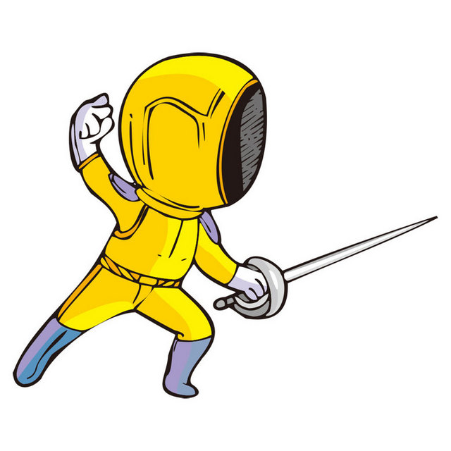

擊劍運動是由二位選手，分別以手持劍，在規定內技巧地運用劍來進行攻擊或防守的一種技擊運動。擊劍運動因劍種的不同，分為鈍劍（又稱花劍、輕劍）、銳劍（又稱重劍）、軍刀（又稱佩劍）三種，鈍劍是擊劍運動中最基本的一種，在亞洲深受歡迎；銳劍需要更多技巧性與準確性；軍刀則速度最快，在歐洲地區較為普遍。擊劍運動是由西方國家決鬥發展而成， 1896 年第一屆雅典奧運會就將男子鈍劍、軍刀運動列為正式比賽項目， 1913 年在巴黎成立了國際擊劍總會（ FIE ），隔年制定了「擊劍競賽規則」，使擊劍運動更趨公平與規則化， 1900 年第二屆巴黎奧運會又增加男子銳劍比賽項目；而女子擊劍運動，則至 1924 年第八屆奧運會，才將女子鈍劍比賽列為正式項目， 1992 年第二十五屆巴塞隆納奧運會，將女子銳劍列為正式項目，女子軍刀比賽則至 2004 年雅典奧運才列為正式項目。 在擊劍運動史上，電動裁判器的發明也是一個很重要的關鍵， 1931 年銳劍比賽率先開始使用電動裁判器， 1995 年鈍劍比賽也開始採用，而軍刀比賽於 1989 年亦開始採用電動裁判器。電動裁判器改變以往以裁判目測決定是否有效擊中的方式，以更科學的方法來判別勝負，使擊劍比賽更公平 40 世紀的埃及，且在古代奧運中，拳擊比賽就已經被列為正式比賽項目之一，但 1896 年第一屆奧運會因希臘君王認為拳擊太過暴力，未將拳擊比賽列為比賽項目，直到 1904 年第三屆奧運會才將它列為正式比賽項目，但第五屆奧運會因瑞典法律禁止拳擊運動，拳擊比賽又因此消失在奧運會項目中，直到 1920 年拳擊比賽才又出現在奧運比賽項目中，並一直維持到現在。
